F5 Solutions for Containers > Class 3: Application Deployments with BIG-IP and Application Services (AS3) Source |
Lab 1 - Creating a Simple HTTP Application using AS3¶
In this lab, we will create a simple HTTP application using AS3. Before sending the AS3 declaration, we will use Microsoft Visual Studio Code to validate our JSON schema.
Exercise 1 - AS3 declaration
Expand the AS3 collections folder that we imported by clicking on it.
Open the
Lab 1folder.For the lab, we will be using token-based authentication via HTTP/HTTPS to the BIG-IP API by sending requests to the BIG-IP and including a valid BIG-IP authentication token in the
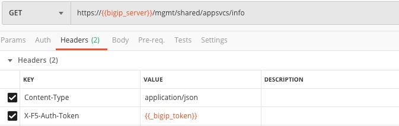X-F5-Auth-Tokenheader.Click and examine the
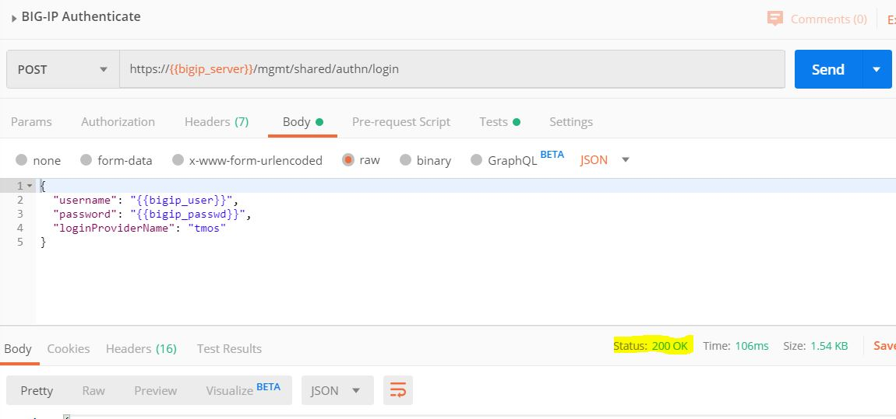BIG-IP Authenticatedeclaration. ClickSendand ensure a 200 OK response in the Postman response window.Now that we have setup token authentication, we can continue working with our BIG-IP.
We will send a GET request to our BIG-IP to see information about the AS3 software package that was previously installed.
Locate the
GET AS3 Inforequest and double click. Notice that we are sending a GET request to an API endpoint with an empty body. Click the blue Send button, and ensure you get a 200 OK response.In the response, you will see the version fo AS3 that is installed on the BIG-IP.
Locate the
HTTP Applicationrequest in the same folder. Notice that we are sending a POST request to an API endpoint. To examine the body of our request, click theBodytab.Before we send our AS3 JSON to the BIG-IP, we want to ensure the schema is valid. In order to do this, we will use Visual Studio Code in the next Exercise.
Exercise 2 - Visual Studio Code Schema Validation
Open Visual Studio Code.
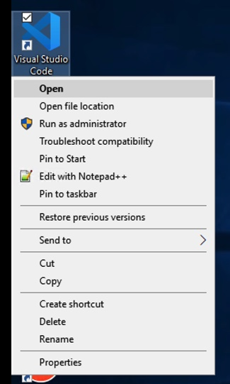Once open, create a new working file by navigating to
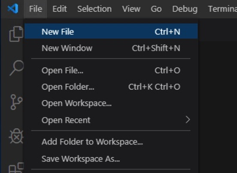File -> New File.Copy the contents of the file
AS3 Schema ValidationJSON body and paste into VS Code.Save the file to your desktop by selecting
File -> Save As. Note: make sure to save with a .json filename.Once the file has been saved, you will notice a wavy line around line 17. This is notifying you that there is a syntax error. You can hover over the wavy line to see more information.
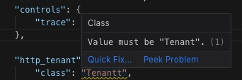You must save the file before Visual Studio Code will show you a syntax error.
For a full declaration, it is easier to view the Problems (navigate to
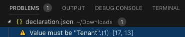View -> Problems).Correct the JSON syntax error by correcting the typo from
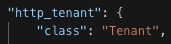TenantttoTenant.Using Schema Validation can be very useful when creating AS3 JSON declarations. It can help check the accuracy of a declaration before deployment for existing declarations. It can also be used as a powerful tool while composing your declarations. It can suggest valid options for a property in a declaration and inform you of required values.
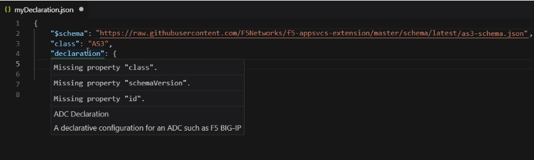 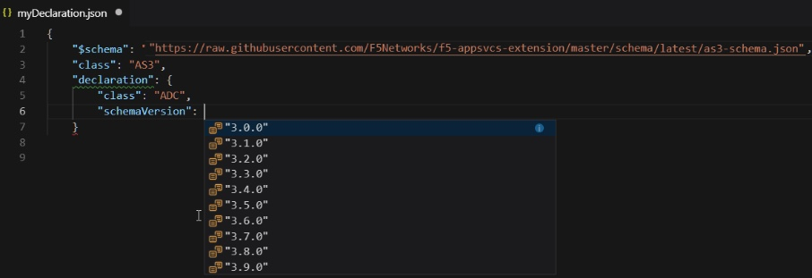Now that we have validated our JSON schema, we could confidently send this declaration to the BIG-IP to successfully create an HTTP application.
Exercise 3 - Send AS3 declaration
Navigate back to Postman and find the
HTTP ApplicationJSON file. Note the only difference between this and the one we used to validate is the first line with the key/value of 'schema' and the schema format URL.Send the AS3 declaration by clicking the blue
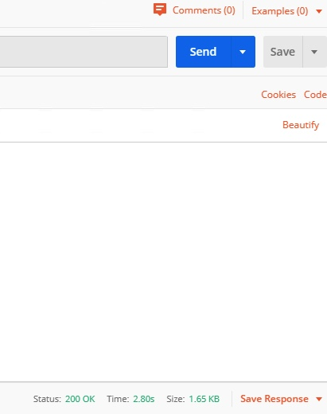Sendbutton. Ensure once it is done processing that you receive a 200 OK response.
Exercise 4 - Confirm changes on BIG-IP
Login to the BIG-IP to confirm our changes. Open Chrome and navigate to
https://10.1.1.4(or you can click on theBIG-IP01bookmark in Chrome).Login with the following credentials: username = admin , password = admin.
Once you are logged in, expand the
Local Traffictab by clicking on it on the left and clickVirtual Servers.Change your partition by choosing the tenant we created,
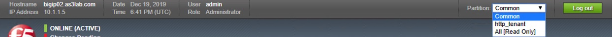http_tenanton the top right of your BIG-IP GUI.You should now see the virtual server that was just created.
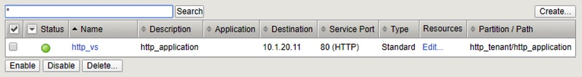Navigate to
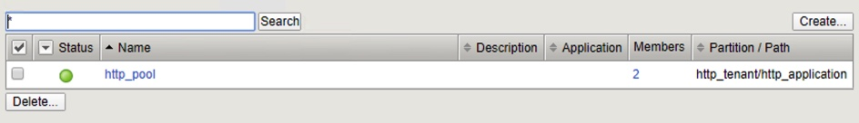Poolsand examine the pool that was created.Click on the
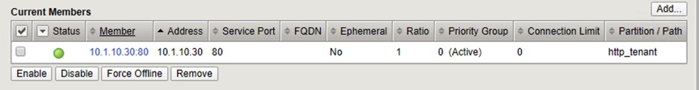http_pooland click on theMemberstab to view the pool members.
Exercise 5 - Modify AS3 declaration
Currently, our declaration only has 1 pool member. In this exercise, we will modify the AS3 declaration to add another pool member to our virtual server.
Go back to Postman and find the AS3 declaration we just pushed previously,
HTTP Application.Locate in the declaration where we declare the pool members:
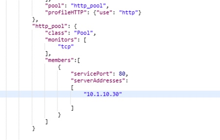In order to add another pool member, we must follow appropriate syntax and declare an additional pool member,
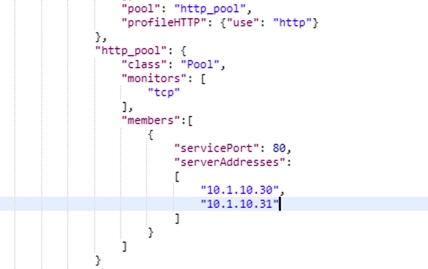10.1.10.31, as follows:Once we have done this, we can send this updated declaration by clicking the blue
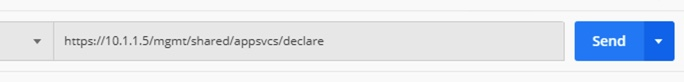Sendbutton.Go back to BIG-IP to see the new pool member that was added. Note: if you are still on the
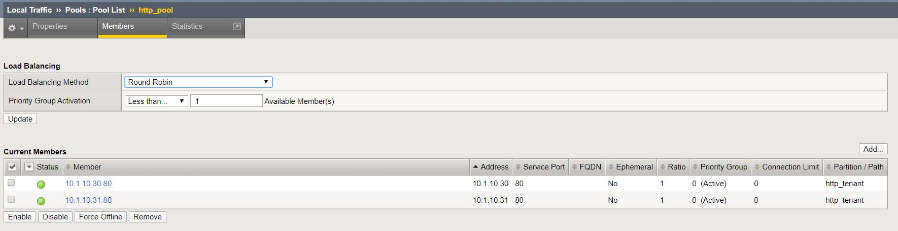Poolpage, you can clickRefreshon the browser to see the newly added pool member.NOTE: When changing the AS3 declaration, we changed the end state which we would like the BIG-IP to be in. This is one major advantage of a declarative interface.
Exercise 6 - Delete HTTP tenant
In order to delete our virtual server, pool, and pool members, we can simply send a POST with an empty tenant body.
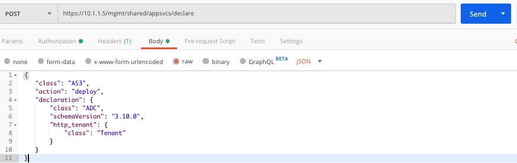Since AS3 is declarative, it will notice that we are sending a POST with an empty tenant body, and by default AS3 will delete the existing virtual server, pool and pool members.
In Postman, find the
Delete Applicationdeclaration. Examine the URI and Body declaration. Notice we are sending a POST to the same API endpoint, but take a close look at the JSON body.The body declares a AS3 tenant called http_tenant, but the body describing the state of the tenant is empty. By default, AS3 will remove the virtual server, pool and pool members. NOTE: Since this would cause the entire tenant to be empty, AS3 will also remove the tenant for us.
Click
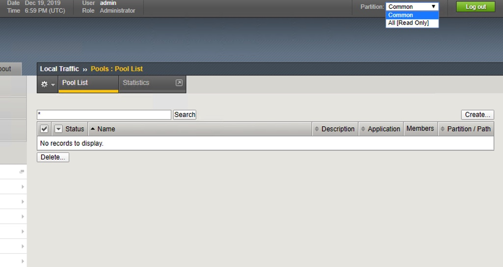Sendand ensure a 200 OK response. Navigate back to the BIG-IP, refresh the page and confirm the changes that the tenant has been deleted.